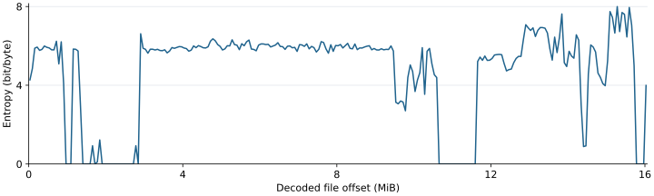

핵심 요약
- 분석한 파일은 리코가 배포한 펌웨어 1.12와 같습니다. 공식 ZIP 안의 파일과 해시값, 전체 바이트를 대조했습니다. 제조사의 전자서명을 검증한 것은 아닙니다.
- 파일은 그대로 읽히는 헤더 두 개와 XOR로 난독화한 구간 세 개로 이루어져 있습니다. 헤더에 든 값으로 세 구간을 풀었습니다. 풀어도 크기와 위치는 그대로이고, 이 단계에서 압축을 풀 일은 없었습니다.
- 직접 작성한 Python 복호화기의 결과는 공개된 기존 JavaScript 디코더의 결과와 전체 바이트가 같았습니다.
- 복호화한 이미지는 ARM 예외 벡터와 시작 코드로 시작합니다. 시작 코드에는 CPU가 Cortex-A9인지 가려내는 비교가 있습니다. 실제 카메라에서 읽은 값이 아니며, 칩(SoC)의 부품 번호는 이 비교로 알 수 없습니다.
- 파일 끝의 60 KiB는 별도 헤더를 가진 보조 이미지입니다. 8비트 마이크로컨트롤러용 코드로 식별했지만 맡은 기능은 확인하지 못했습니다.
확인 파일 바이트를 직접 대조
- 공식 ZIP 안의 파일과 SHA-256, 전체 바이트 일치
- 두 복호화 구현의 출력 16,838,656바이트 일치
- 예외 벡터와 포인터, CPU 식별값 비교 명령의 바이트
- 문자열 일곱 가지의 위치와 해시
정적 분석 코드를 읽어서 판단
- 주 이미지의 분석용 기준 주소(후보)
- 시작 코드가 Cortex-A9 부품 번호를 가려낸다는 해석
- 문자열이 가리키는 소프트웨어 계열(T-Kernel)
미확인 확인하지 않은 것
- 실제 카메라의 CPU 식별값, SoC 부품 번호·코어 수·클럭
- 실행 중의 전체 메모리 배치와 재배치
- 보조 이미지가 맡은 기능
- 제조사 전자서명, 카메라 설치·부팅
배경: 업데이트 파일을 먼저 풀어야 하는 이유
리코는 K-3 II의 펌웨어를 fwdc230b.bin이라는 파일 하나로 배포합니다. 사용자는 이 파일을 SD 카드 최상위 폴더에 넣고 MENU 버튼을 누른 채 전원을 켜서 업데이트합니다(리코의 안내). 파일 안에는 카메라가 실행하는 프로그램과 문자열, 화면 자원이 들어 있습니다. 그런데 대부분이 난독화되어 있어서 그대로는 읽을 수 없습니다.
그래서 펌웨어를 조사하려면 세 가지를 먼저 해야 합니다. 조사하는 파일이 실제 배포본인지 확인하고, 난독화를 풀고, 풀린 결과가 정말 실행 코드인지 확인하는 일입니다. 이 사이트의 다른 분석은 모두 여기서 만든 복호화한 이미지를 입력으로 씁니다.
조사 순서
- 공식 배포본과 대조ZIP 구성원, SHA-256, 전체 바이트
- XOR 난독화 풀기Python 구현과 기존 JavaScript 구현의 출력을 서로 대조
- 코드·주소 검증예외 벡터, CPU 식별값 비교, 문자열·데이터 포인터
먼저 조사한 K-3 Mark III와 같은 순서를 따랐습니다. 다만 K-3 Mark III에서 얻은 적재 주소, 명령 표, 영상 처리 레지스터와 계수는 가져오지 않았습니다. 단계마다 K-3 II 파일 자체에서 근거를 확인했습니다.
이 문서의 표기
- 파일 오프셋
- 파일 맨 앞에서부터 센 바이트 위치입니다.
+0x200처럼 적습니다. 복호화해도 위치가 바뀌지 않으므로 원본과 복호화한 이미지에 같은 값을 씁니다. - 분석용 주소
- 주 이미지의 코드가 메모리에 놓인다고 보고 계산한 주소입니다.
0x02000000 + 파일 오프셋으로 구합니다. 근거는 코드와 주소 검증에 있습니다. - 구간의 끝
- “A → B”로 적은 구간에서 끝 위치 B는 그 구간에 들어가지 않습니다.
- SHA-256
- 파일 내용에서 계산하는 64자리 16진수 값입니다(NIST FIPS 180-4). 두 파일의 값이 같으면 내용이 같다고 봅니다.
분석한 파일은 공식 배포본과 같습니다
분석한 fwdc230b.bin은 리코 공식 ZIP에 든 파일과 SHA-256이 같고, 전체 바이트를 비교해도 같습니다.
| 항목 | 값 |
|---|---|
| 파일·버전 | fwdc230b.bin · Version 1.12 (헤더에 적힌 표기) |
| 공식 배포일 | 2021-07-20 |
| 공식 ZIP | k3ll_v112.zip · 14,498,772바이트 · 들어 있는 파일 1개 |
| 공식 ZIP SHA-256 | 4a1218582cef9a7b34ab01b2525597bed5f2ee13bae2f07ed1245abb6c1af3f5 |
| 파일 크기 | 16,838,656바이트 (16 MiB + 60 KiB). 복호화한 뒤에도 같습니다. |
| 원본 SHA-256 | a33485f351019960192891ef69ddc5d4904ef9e298671d9d9955679e4c901a9a |
| 복호화한 이미지 SHA-256 | 1b87bf35b290e4b4e8910beb4055c34f97504b65e249ad65e5ccc0402bd14cfc |
난독화하지 않은 헤더에는 PENTAX K-3 II와 Version 1.12가 적혀 있습니다. 이 대조로 알 수 있는 것은 내려받은 공식 파일과 같다는 사실까지입니다. 제조사의 전자서명을 검증한 결과는 아닙니다.
리코의 안내에 따르면 1.12는 HD PENTAX-DA★16-50mmF2.8ED PLM AW 렌즈의 초점 동작을 최적화한 버전이며, 이전 버전의 변경도 모두 포함합니다. 이 연구는 변경 전후를 비교하지 않았고 1.12 파일 하나만 분석했습니다.
근거: official-package.json(공식 ZIP 대조) · inventory.json(헤더와 구간) · rea-summary.json(ZIP 검사 기록) · 리코 펌웨어 1.12 안내
파일 구조: 평문 헤더 두 개와 XOR 구간 세 개
파일은 다섯 조각입니다. 난독화하지 않은 헤더 두 개가 각각 주 이미지와 보조 이미지를 푸는 초깃값을 담고 있습니다.
- XOR로 난독화한 구간
- 난독화하지 않은(평문) 헤더
- 바이트 대조로 확인한 구조
- 코드를 읽어 식별
왼쪽 숫자는 실행 중의 메모리 주소가 아니라 파일 오프셋입니다. 구간의 끝 위치는 그 구간에 들어가지 않습니다.
| 조각 | 파일 오프셋 | 크기 | 내용 | 초깃값 위치 |
|---|---|---|---|---|
| XOR 구간 A | 0x00000000 → 0x00000100 | 256바이트 | 풀면 ARM 예외 벡터가 나타납니다. | 주 헤더 0x100 |
| 평문 주 헤더 | 0x00000100 → 0x00000200 | 256바이트 | PENTAX K-3 II, Version 1.12, 모델 식별자 | — |
| XOR 구간 B | 0x00000200 → 0x01000000 | 16,776,704바이트 | 시작 코드, 그리고 코드·문자열·리소스가 섞인 주 영역 | 주 헤더 0x100 |
| 평문 보조 헤더 | 0x01000000 → 0x01000080 | 128바이트 | 별도의 초깃값, PENTAX K-3MC | — |
| XOR 구간 C | 0x01000080 → 0x0100F000 | 61,312바이트 | 보조 이미지의 코드 | 보조 헤더 0x01000000 |
다섯 조각의 크기를 더하면 파일 크기 16,838,656바이트와 같습니다. 0x01000000부터 파일 끝까지가 61,440바이트(60 KiB)이고, 그 앞 128바이트가 보조 헤더입니다.
헤더에서 그대로 읽히는 문자열
| 파일 오프셋 | 문자열 | 뜻 |
|---|---|---|
0x00000100 | HOKKTKIYHTNTMU | 주 헤더의 식별 문자열. 이 자리의 16바이트가 구간 A·B의 초깃값입니다. |
0x00000124 | Copyright (C) RICOH IMAGING COMPANY, LTD. | 저작권 표기. 복호화기는 이 위치의 Copyright로 파일 형식을 가려냅니다. |
0x0000014e | PENTAX K-3 II | 모델 이름 |
0x0000015c | Version 1.12 | 버전 |
0x00000194 | RICOHIMG | 제조사 식별자 |
0x000001ab | DSC_K-3_II | 내부 모델 이름 |
0x01000000 | OIOSMUON | 보조 헤더의 식별 문자열. 이 자리의 16바이트가 구간 C의 초깃값입니다. |
0x01000040 | PENTAX K-3MC | 보조 이미지의 모델 이름 |
보조 이미지는 초깃값과 헤더를 따로 가진 독립된 구간입니다. 이 코드가 Fujitsu F²MC-8L 계열과 호환되는 8비트 명령열이라는 점은 하드웨어 식별 문서에서 확인했습니다. 맡은 기능은 아직 모릅니다. 이름의 MC만 보고 기계 제어용 프로세서라고 단정하지 않습니다.
두 헤더에는 구역별 덧셈 체크섬도 들어 있습니다(주 헤더 0x1F0, 보조 헤더 0x0100007C). 체크섬 규칙과 파일을 다시 포장하는 방법은 무손실 재포장과 업데이트 검사에서 다룹니다.
복호화 방법과 결과 확인
헤더의 16바이트 초깃값으로 키를 만들어 0x80바이트 블록마다 XOR합니다. 서로 다른 두 구현의 결과가 16,838,656바이트 모두 같았습니다.
- 펌웨어 바이너리(저장소에 넣지 않음)
- 도구와 공개 근거 파일
- 대조·검사 결과가 일치
XOR는 같은 값을 두 번 적용하면 원래대로 돌아오는 연산입니다. 이 파일은 헤더에 적힌 값에서 계산한 키로 내용을 XOR해 두었습니다. 키를 만드는 규칙만 알면 누구나 되돌릴 수 있으므로, 비밀 키가 따로 있어야 하는 암호화와는 다릅니다. 이 문서의 “복호화”는 이 XOR 난독화를 푸는 일을 가리킵니다.
푸는 순서
- 초깃값 읽기 헤더 첫 16바이트를 32비트 리틀엔디언 값 네 개로 읽습니다. 주 헤더는
+0x100, 보조 헤더는+0x01000000에서 읽습니다. - 키 만들기 값 네 개를 더하고 빼고 비트를 뒤집어 32비트 키 32개를 만듭니다. 키 32개가 블록 하나(0x80바이트)의 32비트 값 32개에 하나씩 대응합니다.
- 블록마다 XOR 각 값에 “키에서 그 블록의 상대 오프셋을 뺀 값”을 XOR합니다. 상대 오프셋은 구간 A·B에서는 파일 오프셋이고, 구간 C에서는
0x01000000을 뺀 값입니다.
풀기 전과 후의 길이가 같고 파일 오프셋도 그대로입니다. 이 파일에 적용되는 분기는 압축 해제를 호출하지 않습니다. 풀린 내용 안에 다른 압축 데이터가 있는지는 따로 조사할 문제입니다.
Python 복호화기는 다른 파일을 잘못 처리하지 않도록 입력을 먼저 검사합니다. 크기가 정확히 16,838,656바이트가 아니거나 세 위치의 표식(0x124의 Copyright, 0x14E의 PENTAX K-3 II, 0x01000040의 PENTAX K-3MC)이 없으면 실행하지 않습니다.
키 계산식
초깃값 네 개를 iv[0]~iv[3], 블록의 상대 오프셋을 off라고 하면 다음과 같습니다. 모든 계산은 32비트 범위에서 합니다. 식은 inspect_firmware.py의 decode_region과 같습니다.
a = iv[0] + ~iv[2]
b = iv[1] + ~iv[3]
t = (a, b, ~a, ~b)
key[8*j + i] = t[i] + iv[j] - 1 (i, j = 0..3)
key[8*j + 4 + i] = t[i] - iv[j] - 1
word[k] ^= key[k] - off (k = 0..31, 블록 안의 32비트 값)세 구간의 시작·끝·기준 위치·초깃값 위치는 inventory.json의 algorithm.regions에 있습니다. 알고리즘 이름은 “32-bit little-endian XOR in 0x80-byte blocks”로 기록했습니다.
두 구현의 출력 대조
복호화 규칙은 Tao Wang이 공개한 pentax-firmware-tool(JavaScript)을 바탕으로 Python으로 새로 구현했습니다. 두 구현에 같은 파일을 넣고 출력을 처음부터 끝까지 비교했습니다.
- 일치한 바이트
- 16,838,656바이트 전체
- 출력 SHA-256
1b87bf35b290e4b4e8910beb4055c34f97504b65e249ad65e5ccc0402bd14cfc- 기존 구현의 커밋
3e2597b5d4cfa9ce242b6d3aeef32c28e64b6f73- 기존 구현 소스의 SHA-256
40c2ea6b9f13ed484f102f4d12b472fd0fda9a64c7dccaea63ecb5da32711e5c
이 대조는 같은 알고리즘을 구현한 두 프로그램이 한 버전의 파일에서 같은 결과를 낸다는 뜻입니다. 알고리즘 자체가 카메라의 처리와 같은지는 다음 절의 코드 검증이 뒷받침합니다. 결과는 decoder-comparison.json에 있습니다.
복호화한 이미지의 바이트 분포
복호화한 이미지를 64 KiB(65,536바이트)씩 257개 창으로 나누어 Shannon 엔트로피를 계산했습니다. 한 가지 값만 반복되는 창은 0, 256가지 바이트 값이 고르게 나오는 창은 8 bit/byte가 됩니다.

- 6 안팎인 구간 — 약 2.9~9.5 MiB의 창 106개가 모두 5.6~6.7 사이입니다. 이 연구에서 확인한 예외 처리기와 RAW·톤 함수가 이 구간에 있습니다.
- 0에 가까운 구간 — 창 43개가 0.01 미만입니다. 한 가지 바이트 값이 거의 전부를 차지하는 곳으로, 약 0.9~1.1 MiB, 1.4~2.9 MiB, 10.6~11.6 MiB, 15.75~16 MiB에 모여 있습니다.
- 7을 넘는 창 — 9개가 있고 모두 12.8 MiB 이후에 있습니다. 가장 높은 값은
0xF40000에서 시작하는 창의 7.994668입니다. - 보조 이미지 — 마지막 창(61,440바이트)의 값은 3.98895입니다.
엔트로피만으로 어떤 구간이 압축 데이터인지, 암호화되어 있는지, 실행 코드인지 판별하지 않았습니다. 창별 수치는 findings.json의 entropy_windows_64k에 있고, 그림은 render_entropy.py가 이 수치로 그립니다.
코드와 주소 검증: 기준 주소와 Cortex-A9 판별 경로
첫 명령부터 따라가면 주 이미지의 기준 주소 후보는 0x02000000입니다. 시작 코드는 CPU 식별값의 부품 번호를 Cortex-A9의 값과 비교합니다.
- 파일 바이트로 확인한 명령과 값
- 여기서 얻은 분석용 기준 주소
- 역할을 확인하지 못한 경로
기준 주소를 구한 방법
ARM 프로세서는 전원이 들어오거나 인터럽트·오류가 생기면 정해진 위치의 예외 벡터에서 실행을 시작합니다. 복호화한 이미지의 첫 32바이트가 이 벡터입니다. 리셋 벡터는 바로 뒤에 놓인 포인터를 읽어 그 주소로 분기합니다. 포인터의 값은 0x02000200이고, 시작 코드는 파일 오프셋 0x200에 있습니다. 두 값의 차이가 기준 주소 후보 0x02000000입니다.
리셋 포인터 하나만으로 주소를 정하지 않았습니다. 같은 변환(주소 = 0x02000000 + 파일 오프셋)이 다른 포인터에도 맞는지 확인했습니다.
| 관찰 지점 | 파일 안의 연결 | 뜻과 한계 |
|---|---|---|
| 리셋 벡터 | +0x0 → +0x20 → 0x02000200 | 시작 코드 +0x200과 기준 주소 후보를 잇습니다. |
| 마스크 포인터 | +0x458 → 0x02000448 → 0xFFF0 | 같은 기준 주소를 쓰는 데이터 참조 |
| 비교값 포인터 | +0x45C → 0x0200044C → 0xC090 | CPU 식별값 검사에 쓰는 상수 |
| 미정의 명령 예외 | +0x24 → 0x022EC154 | +0x2EC154에서 ARM 처리기의 시작 패턴을 확인했습니다. |
| HDMI 이름 포인터 | +0x9B56F4 등 네 곳 → 0x02A789DA | 문자열 +0xA789DA를 가리키는 데이터 참조. 호출 관계는 아닙니다. |
이 결과는 분석용 기준 주소를 뒷받침합니다. 실행 중의 전체 메모리 배치나, 코드가 다른 곳으로 복사되는 구간까지 설명하지는 않습니다.
시작 코드의 CPU 식별값 비교
MIDR는 프로세서가 어떤 설계인지 알려 주는 레지스터입니다. 비트 15~4가 부품 번호이고, Arm의 Cortex-A9 기술 문서는 이 값 0xC09를 Cortex-A9로 정의합니다(Arm Cortex-A9 TRM §4.3.1).
시작 코드는 MIDR를 읽고 0xFFF0으로 마스킹해 부품 번호만 남긴 뒤 0xC090과 비교합니다. 0xC090을 4비트 내리면 0xC09입니다.
따라서 이 펌웨어에는 Cortex-A9를 가려내는 시작 경로가 있다고 볼 수 있습니다. 값이 다를 때 분기하는 +0x420의 경로는 하드웨어 식별 문서에서 이어서 다룹니다.
확인한 것은 펌웨어 안의 Cortex-A9 판별 경로입니다. 실제 카메라에서 MIDR를 읽지 않았습니다. SoC의 부품 번호, 코어 수, 동작 클럭은 이 검사로 알 수 없습니다. K-3 Mark III에서 확인한 SC2000A 정보를 K-3 II에 적용하지 않았습니다.
예외 벡터와 비교 명령
| 벡터 | 명령 | 포인터 위치 | 가리키는 주소 | 파일 오프셋 | 대상 첫 16바이트의 SHA-256 |
|---|---|---|---|---|---|
+0x0 리셋 | 0xe59ff018 | +0x20 | 0x02000200 | +0x200 | 64803de49de8a245511cc132622f68f863f1343e4832a4026ec66b6ab2e61c9d |
+0x4 미정의 명령 | 0xe59ff018 | +0x24 | 0x022EC154 | +0x2EC154 | dd3548a81e1ddd43a87c7c8cc509702f94d27577883b5e1451d741c7ff7a61fd |
+0x8 SVC | 0xe59ff018 | +0x28 | 0x022EC204 | +0x2EC204 | 914f371626839b7265537db20db183b1862df3138b98a75ee2fa94154a8f3d4a |
+0xC 프리페치 중단 | 0xe59ff018 | +0x2C | 0x022EC27C | +0x2EC27C | 4dd060f8d7daa0eebee8e1c85eccea5c10e75e95c77f2b8f4baf958e7b20fac7 |
+0x10 데이터 중단 | 0xe59ff018 | +0x30 | 0x022EC28C | +0x2EC28C | b95c146ae890e00b1be1ee6485879148323282e9fc8b131b46fece064e2d8e8d |
+0x14 (예약) | 0xe320f000 | 아무 일도 하지 않는 명령(NOP) | |||
+0x18 IRQ | 0xea000009 | 포인터 없이 파일 +0x44로 바로 분기 | |||
+0x1C FIQ | 0xe59ff018 | +0x3C | 0x022EC2C0 | +0x2EC2C0 | e221a8c3a5ea34858e42f3591f684a89ac4ee4c2bf3d4556b040ba746b8ccab8 |
0xe59ff018은 “PC 기준 0x18 뒤의 값을 읽어 PC에 넣는다”는 명령(LDR PC, [PC, #0x18])입니다. 벡터가 있는 위치에서 0x20 뒤의 포인터를 읽게 됩니다.
| 파일 오프셋 | 명령 워드 | 하는 일 |
|---|---|---|
+0x20C | 0xEE100F10 | MRC p15,0,r0,c0,c0,0 — MIDR를 r0로 읽습니다. |
+0x210 | 0xE59F1240 | +0x458의 포인터(0x02000448)를 r1에 읽습니다. |
+0x214 | 0xE5911000 | 그 주소(파일 +0x448)의 마스크 0xFFF0을 읽습니다. |
+0x218 | 0xE0001001 | r1 = MIDR & 0xFFF0 — 부품 번호 필드만 남깁니다. |
+0x21C | 0xE59F0238 | +0x45C의 포인터(0x0200044C)를 r0에 읽습니다. |
+0x220 | 0xE5900000 | 그 주소(파일 +0x44C)의 비교값 0xC090을 읽습니다. |
+0x224 | 0xE1510000 | r1과 0xC090을 비교합니다. |
+0x228 | 0x1A00007C | 다르면 파일 +0x420으로 분기합니다. |
- 비교 구간의 SHA-256
68e3d7cce5b2d6021670394deb48d5814c67f41431f345b61d373cecd39b825c- 주 이미지(앞 16 MiB)의 SHA-256
3201eb09baa953102807e1977ac856f90a91e2e78835e82fab4ddbcb182392af- 보조 이미지(뒤 61,440바이트)의 SHA-256
14c983a45e16e940e27c36e344e1e44b79efe3970dbbc92fbbd22a9208d2961d
모든 값은 findings.json에 있고, verify_findings.py가 복호화한 이미지에서 다시 계산합니다.
이미지 안의 단서: 문자열과 K-3 Mark III와의 차이
실시간 운영체제 T-Kernel, RAW 현상, 톤·감마, AF와 관련된 문자열이 들어 있습니다. 문자열은 추적의 출발점이며, 그것만으로 기능이나 알고리즘을 확정하지 않았습니다.
| 분야 | 문자열과 파일 오프셋 | 이어진 조사 |
|---|---|---|
| 운영체제 계열 | T-Kernel 파일 0xA7A3DAT-Kernel/OS SVC in execution 파일 0x6157C0 | 소프트웨어 계열을 짐작하게 하는 단서입니다. OS 버전, 시스템 호출과 태스크 구조는 확인하지 않았습니다. |
| RAW 현상 | Allocate ERR! in DevelopmentRawImage()파일 0x52B15C | 이 문구를 참조하는 함수와 호출 경로를 RAW 현상 경로에서 추적했습니다. |
| 톤·감마 | #### CColorInterpolationDriver::DumpToneGamma() ####파일 0x5B1291 | 진단 출력과 실제 설정 경로의 관계를 톤 곡선 경로에서 확인했습니다. |
| AF 디포커스 | /////CalcMoveObjectDriveDefocusError/////파일 0x67AC4 | 이름만으로 수식이나 알고리즘을 확정하지 않습니다. AF 조사는 AF 안내에서 시작합니다. |
| HDMI | HdmiOutputSet 파일 0xA789DA | 이 문자열을 가리키는 데이터 포인터 네 개를 확인했습니다. 명령 처리기와의 연결은 확인하지 못했습니다. |
| 보조 헤더 | PENTAX K-3MC 파일 0x01000040 | 보조 이미지의 모델 이름 |
T-Kernel은 TRON 포럼이 공개한 임베디드용 실시간 운영체제입니다. 문자열이 있다는 사실은 이 계열의 소프트웨어를 쓴다는 단서일 뿐이고, 버전이나 구성을 확인한 것은 아닙니다.
복호화한 이미지에서 길이가 6 이상인 인쇄 가능한 ASCII 연속 구간은 30,254개입니다. 이 숫자에는 기계어 바이트가 우연히 글자처럼 보이는 구간도 섞여 있을 수 있습니다.
반대로 Linux version, SC2000, milbeaut, SHELLCMD, Cortex라는 바이트열은 이미지 전체에서 하나도 나오지 않았습니다. 이 결과는 정확히 그 바이트열이 없다는 뜻이며, 해당 기능이나 구성 요소가 없다는 증명은 아닙니다.
문자열의 길이와 해시
| 문자열 | 파일 오프셋 | 길이(끝의 NUL 포함) | SHA-256(끝의 NUL 포함) |
|---|---|---|---|
T-Kernel | 0xA7A3DA | 9 | a4b34e1750a7b38b3d5bfd4d17d30b8b6e5b5bc02b68045f06e23f3e4b39b80c |
T-Kernel/OS SVC in execution | 0x6157C0 | 29 | eda7f2fe4ad826f29e1ce2803c6bf54ee67aabab7e9e16a02d2db9b0d7d50149 |
Allocate ERR! in DevelopmentRawImage() | 0x52B15C | 40 | 61ff9629ce9cbc7ae0a0f0f3f9602d91da716e89902e00d3381db7e38d6f9af3 |
#### CColorInterpolationDriver::DumpToneGamma() #### | 0x5B1291 | 54 | a9faa50289e65dd21f0f5592057cc70ae4ebb5672225a8dee53ce8b89257559e |
/////CalcMoveObjectDriveDefocusError///// | 0x67AC4 | 43 | d20d8e3bc3aa338a4eaeb6d36b9b37d57022e0b46bf7ffef86e7afae64a62e60 |
HdmiOutputSet | 0xA789DA | 14 | 779893d2c16028775634e9a711d3cfca4a42e670a0516263d606c4a05a58dc70 |
PENTAX K-3MC (뒤에 공백 3개) | 0x01000040 | 16 | 9aea1508c6746a81abdad5a5a8de08961aab2e365fc7770c3e86ea0fd4a4c4e1 |
길이와 해시는 줄 바꿈 문자와 끝의 NUL을 포함해 계산한 값입니다. HdmiOutputSet을 가리키는 데이터 포인터는 파일 +0x9B56F4, +0x9B5708, +0x9B5834, +0x9B5960에 있습니다. 출처는 findings.json의 seeds와 hdmi_pointer_offsets입니다.
K-3 Mark III와 다른 점
리코는 K-3 II의 영상 엔진을 PRIME III, K-3 Mark III의 영상 엔진을 PRIME V와 2세대 가속기로 소개합니다. 영상 엔진의 상품명은 칩의 부품 번호가 아닙니다. 두 기종의 파일 구조와 CPU 근거는 따로 검증한 결과이며, 하드웨어 주소나 영상 처리 동작이 서로 호환된다고 볼 근거는 없습니다.
| 항목 | K-3 II 펌웨어 1.12 (이 문서) | K-3 Mark III 펌웨어 2.20 |
|---|---|---|
| 공식 영상 엔진 이름 | PRIME III | PRIME V + 2세대 가속기 |
| 파일 처리 | XOR 난독화를 풀면 끝. 크기가 그대로입니다. | 0x80부터 LZ 압축 스트림을 풉니다. |
| CPU의 직접 근거 | MIDR 부품 번호 0xC09 비교 경로 | Linux 장치 트리의 arm,cortex-a7 |
| SoC 정보 | 정확한 부품 번호 미확인 | 장치 트리의 milbeaut,sc2000a |
| 분석용 주소 후보 | 주 이미지 0x02000000 | RTOS 0x52500000 |
| 운영체제·구성 | T-Kernel 관련 문자열. 세부 구조 미확인 | RTOS, Linux, INITFS 등 이름이 붙은 레코드 |
비교 출처: 리코 K-3 II 제품 소개 · 리코 K-3 Mark III 제품 소개 · K-3 Mark III 보고서(비교에 쓴 고정 커밋)
한계와 남은 과제
- 정적 분석입니다. 카메라에서 실행하거나 펌웨어를 설치하지 않았습니다. 파일을 읽고 대조한 결과만 있습니다.
- 기준 주소는 후보입니다. 포인터들이 서로 맞는다는 사실이 실행 중의 물리 메모리 배치 전체를 알려 주지는 않습니다. 데이터 복사 구간과 RAM 재배치는 이 문서에서 추적하지 않았습니다.
- CPU 비교는 칩을 특정하지 않습니다. Cortex-A9 부품 번호 비교만으로는 실리콘 패키지, 코어 수, 클럭을 알 수 없습니다.
- T-Kernel은 단서입니다. 문자열은 소프트웨어 계열을 짐작하게 할 뿐, OS 버전이나 호출·명령 처리 구조를 확인한 것은 아닙니다.
- K-3 Mark III의 구조를 옮기지 않았습니다. 이름 있는 레코드나 LZ 압축 배치는 이 파일에 적용하지 않았습니다.
- 내부 압축 여부는 열려 있습니다. 복호화한 내용 안에 압축된 자원이 따로 있는지는 조사하지 않았습니다.
- 보조 이미지의 역할은 모릅니다. 명령어 집합은 F²MC-8L 호환으로 식별했지만, 어떤 부품에서 무슨 일을 하는 코드인지는 확인하지 못했습니다. 업데이트할 때 이 이미지가 전송되는 과정은 업데이트 전송과 기록 오류에서 다룹니다.
findings.json의 한계 목록에는 “보조 영역의 명령어 집합과 역할은 미분류”라고 적혀 있습니다. 이 파일을 만든 뒤에 명령어 집합을 식별했으므로, 지금 남은 것은 역할입니다.
재현 방법
원본 펌웨어는 저장소에 없습니다. 리코의 배포 페이지에서 직접 내려받아 준비합니다. 기본 분석은 Python 3.12의 표준 라이브러리만 씁니다.
python inspect_firmware.py <fwdc230b.bin 경로> --output-dir .private/decoded
python verify_findings.py .private/decoded/decoded.bin --compare analysis/findings.json
python -m unittest discover -s tests -v
python verify_publication.py- 첫 명령은 복호화한 이미지
decoded.bin과inventory.json을 새 폴더에 저장합니다. 출력 폴더는 없는 경로여야 하며, 이미 있는 파일을 덮어쓰지 않습니다. - 둘째 명령은 복호화한 이미지에서 근거를 다시 계산해 공개된 findings.json과 같은지 비교합니다.
- 엔트로피 그림은 matplotlib 3.9.2를 설치한 뒤
python render_entropy.py로 다시 만들 수 있습니다(선택 사항).
기존 JavaScript 구현과 전체 바이트 대조하기
고정 커밋의 index.js를 .private/vendor/index.js에 저장한 뒤 실행합니다. Node.js v24.15.0에서 확인했습니다. 비교기 compare_upstream.js는 실행하기 전에 소스와 입력 파일의 SHA-256부터 확인합니다.
node compare_upstream.js .private/vendor/index.js <fwdc230b.bin 경로> .private/decoded/decoded.bin기존 구현이 쓰는 Buffer() 때문에 사용 중단(deprecation) 경고가 나오지만 전체 출력 대조는 통과합니다.
| 검증 | 결과 | 한계 |
|---|---|---|
| 공식 파일 대조 | ZIP 안의 파일과 전체 바이트 일치 | 전자서명 검증이 아닙니다. |
| 독립 디코더 대조 | 16,838,656바이트 전체 일치 | 한 버전의 파일에서 같은 알고리즘의 두 구현을 대조했습니다. |
| 도구 단위 검사 | 복호화기 4개, 근거 검사기 3개 테스트 통과 | 합성 입력으로 범위·덮어쓰기·오류 처리를 검사합니다. |
| 복호화한 이미지의 근거 검사 | 공개 findings.json을 다시 만들어 일치 | 관찰한 정적 근거에 한정됩니다. |
| ZIP 검사(REA) | 들어 있는 파일 1개와 SHA-256 확인 | 펌웨어 코드 분석에는 다른 도구를 썼습니다. |
| 카메라 실행·재빌드 | 하지 않음 | 실기 동작과 부팅 가능성은 검증하지 않았습니다. |
저장소의 단위 테스트는 다른 주제의 검사를 포함해 현재 24개이며 모두 통과합니다. 공개 CI는 원본 펌웨어를 받지 않고, 합성 테스트와 공개 자료의 정합성만 확인합니다.
분석 도구의 역할 구분
공식 ZIP의 구성원과 해시는 REA라는 분석 도구로 확인했습니다. 조사에 쓴 Windows 환경에서는 REA의 Linux 전용 Binwalk 스캐너를 실행할 수 없었고, 원시 ARM 이미지를 처리할 네이티브 디컴파일 공급자도 준비되어 있지 않았습니다. 그래서 난독화를 푸는 일과 근거 검사는 Python으로, 시작 코드를 읽는 일은 Capstone 디스어셈블러로 했습니다. 이 결과를 REA가 만든 코드 분석 증거로 표시하지 않았습니다. REA의 증거 ID와 제약은 rea-summary.json에 있습니다.
출처와 라이선스, 공개 범위
저장소에는 직접 만든 도구와 관찰값만 있습니다. 제조사의 펌웨어와 거기서 꺼낸 바이너리는 공개하지 않습니다.
| 공개 저장소에 있는 것 | 로컬에만 두는 것 | 하지 않은 일 |
|---|---|---|
| 직접 작성한 분석·검증 도구 관찰값(오프셋, 해시, 수치) 도식과 HTML 문서 | 원본 펌웨어 복호화한 바이너리 전체 문자열 덤프 디스어셈블 결과 | 카메라에 펌웨어 설치(플래싱) 실기 실행 전체 펌웨어 재빌드 |
복호화 알고리즘의 출처
난독화를 푸는 로직은 Tao Wang의 pentax-firmware-tool을 바탕으로 구현했습니다. 원 프로젝트는 MooseV2, svenpeter42 두 사람의 작업과 bootcoder의 패치를 출처로 밝히고 있습니다.
라이선스
이 저장소의 도구와 문서에는 GPL-2.0을 적용합니다. 이 라이선스는 제조사의 펌웨어에 적용되지 않으며, 원본 펌웨어의 권리는 제조사에 있습니다.
리코의 배포 페이지에는 펌웨어 사용 조건이 게시되어 있습니다. 이 문서는 그 조건의 법적 효력을 판단하지 않으며, 공개 저장소에 제조사 펌웨어를 다시 배포하지 않습니다.
근거 파일과 참고 자료
- inventory.json — 입력·출력의 크기와 해시, 헤더 문자열, XOR 구간 세 개
- official-package.json — 공식 ZIP의 주소·크기·해시와 대조 결과
- findings.json — 예외 벡터, CPU 식별값 비교, 문자열, 창별 엔트로피, 한계 목록(조사 기준일 2026-11-07)
- decoder-comparison.json — 기존 JavaScript 구현과의 전체 바이트 대조
- rea-summary.json — ZIP 검사의 증거 ID와 제약
- validation.json — 사용한 도구 버전과 검사 기록
- hq-status.json — 연구 목표별 진행 상태(영문)
- inspect_firmware.py · verify_findings.py · compare_upstream.js · render_entropy.py — 복호화기, 근거 검사기, 디코더 비교기, 엔트로피 그림 생성기
- 외부 자료: 리코 K-3 II 펌웨어 1.12 안내 · Arm Cortex-A9 Technical Reference Manual(DDI 0388G) §4.3.1 Main ID Register · C. E. Shannon, “A Mathematical Theory of Communication”(1948) · TRON 포럼의 T-Kernel 소개 · NIST FIPS 180-4(SHA-256)